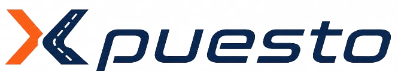
La primera red digital del carro por puesto interurbano en Venezuela.
Reserva por puesto, equipaje con foto, paradas virtuales seguras y un chofer verificado. Una app para el pasajero, otra para el chofer, y el backoffice que lo ve todo.
Presentación para inversionistas · Septiembre 2026 · Venezuela
Uber y Ridery resolvieron la ciudad. Entre ciudades, el carro por puesto sigue exactamente igual que hace 40 años.
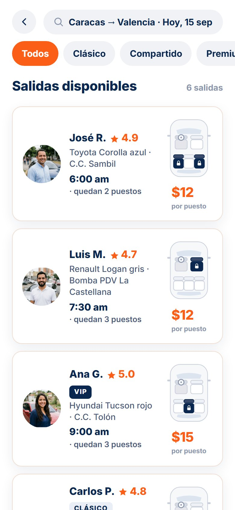
Busca la ruta, elige la hora, aparta su puesto exacto, declara el equipaje y paga. Sigue el viaje en vivo.
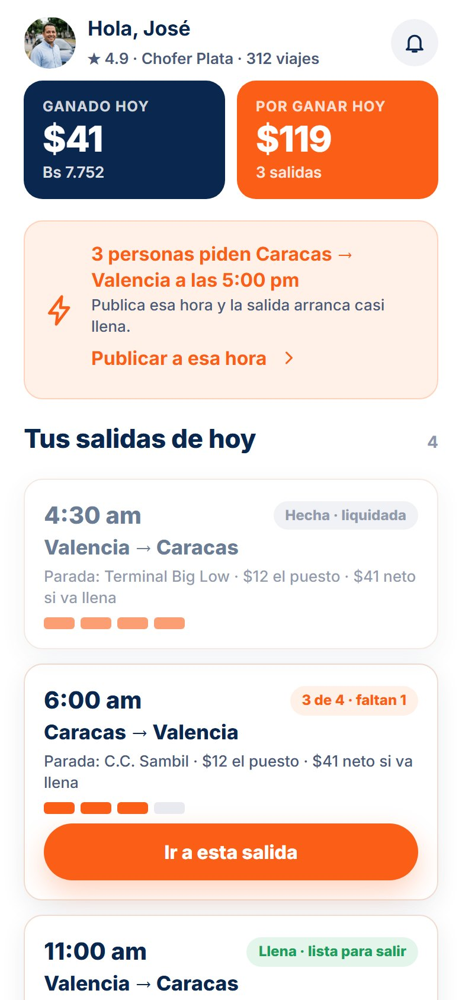
Publica horarios, toma rutas ya llenas, marca «Ya llegué», fotografía el maletero y cobra a su billetera.
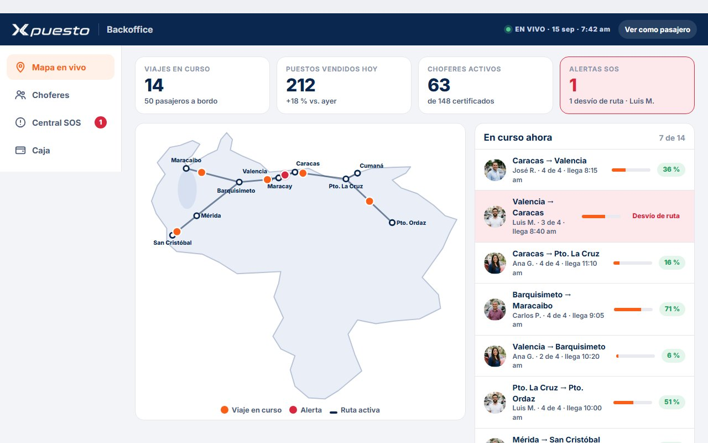
Mapa nacional en vivo, choferes y documentos, central SOS, caja y comisiones. Todo trazable.
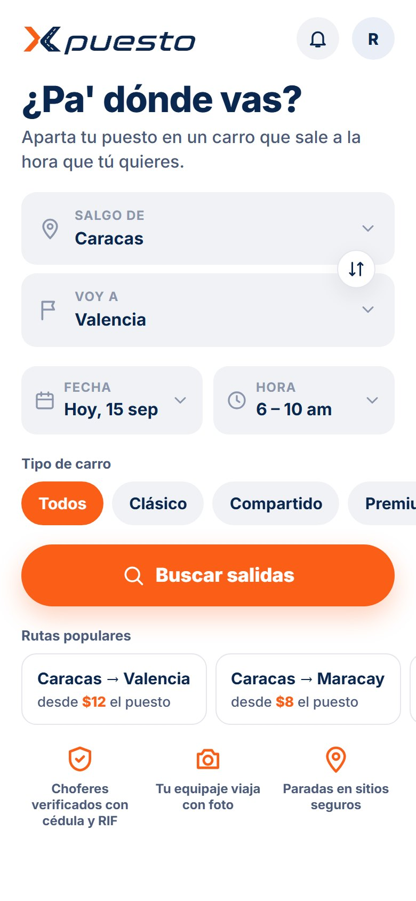
Busca
Origen, destino, fecha, hora y tipo de carro.
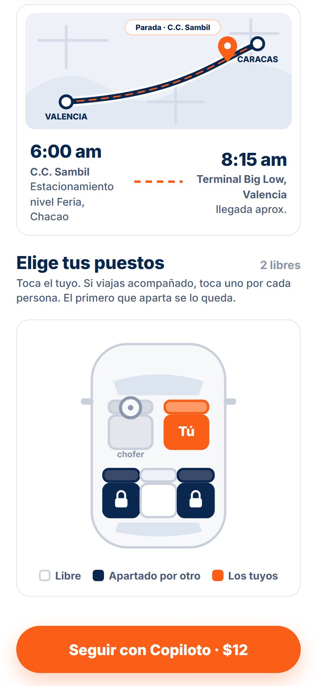
Elige su puesto
Ve el carro con los cuatro puestos. El que aparta, se lo queda.
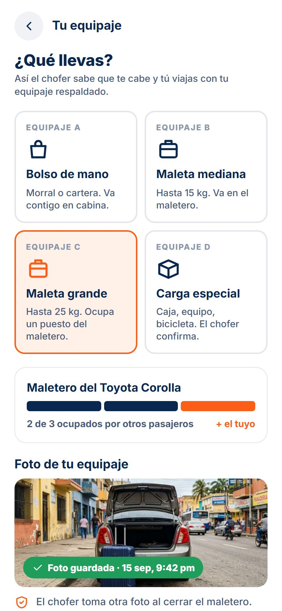
Declara el equipaje
Con foto. El maletero se llena y bloquea lo que no cabe.
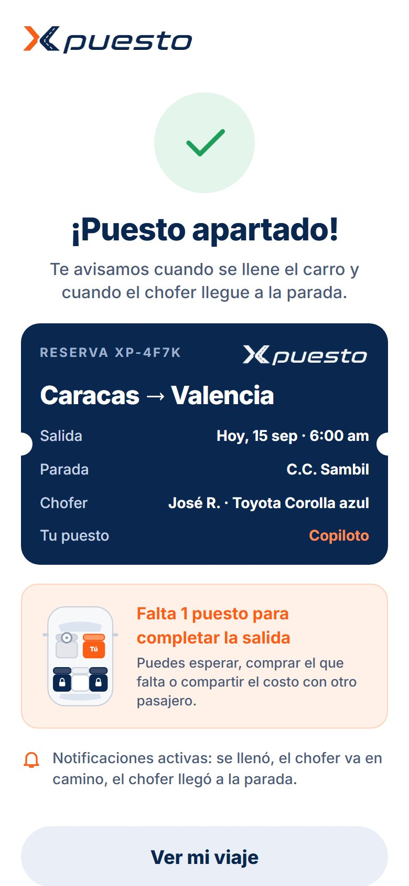
Boleto
Billetera o Pago Móvil. Se cobra sólo cuando el carro se llena.
El carro tiene cuatro puestos y cada uno se vende por separado. Copiloto, atrás izquierda, centro o derecha. Una familia aparta tres con nombre.
Si no se llena, el pasajero decide: esperar, comprar los que faltan o compartir el costo. El chofer nunca sale a pérdida.
El pasajero fotografía su maleta al reservar; el chofer, al cerrar el maletero. Evidencia digital que protege al chofer y a la plataforma.
Centros comerciales, bombas, farmacias. El pasajero espera seguro e iluminado, el comercio gana tráfico, el terminal deja de hacer falta.
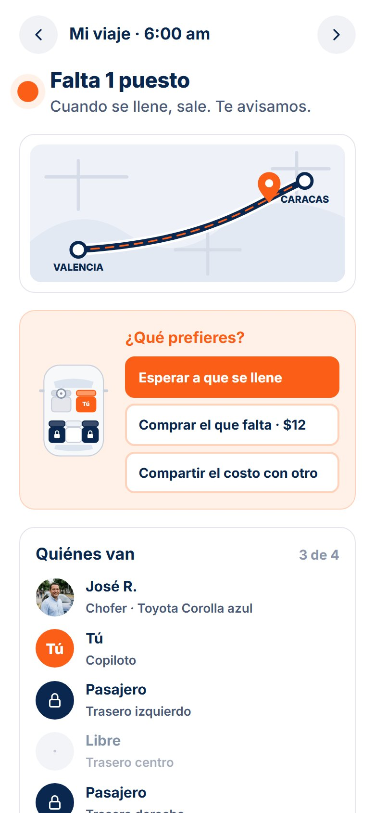
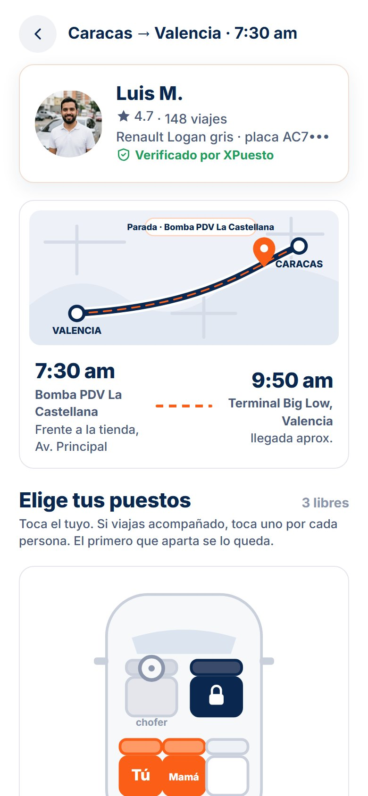
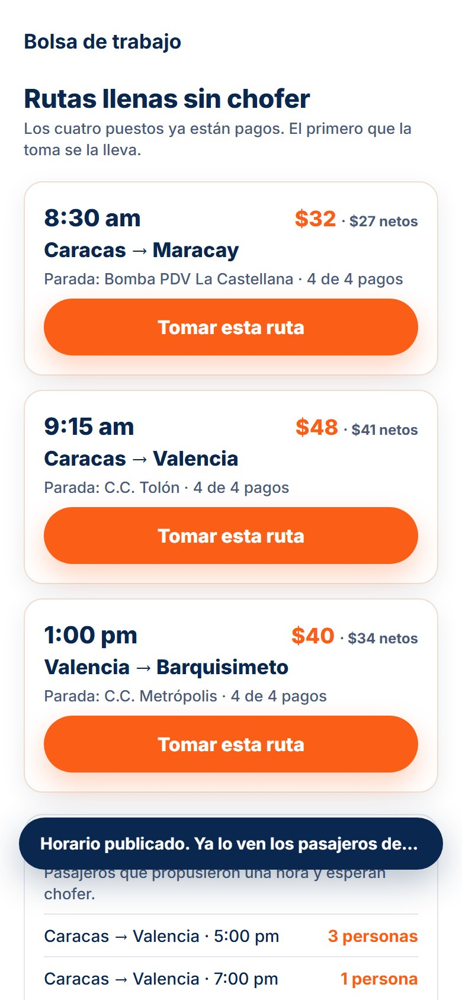
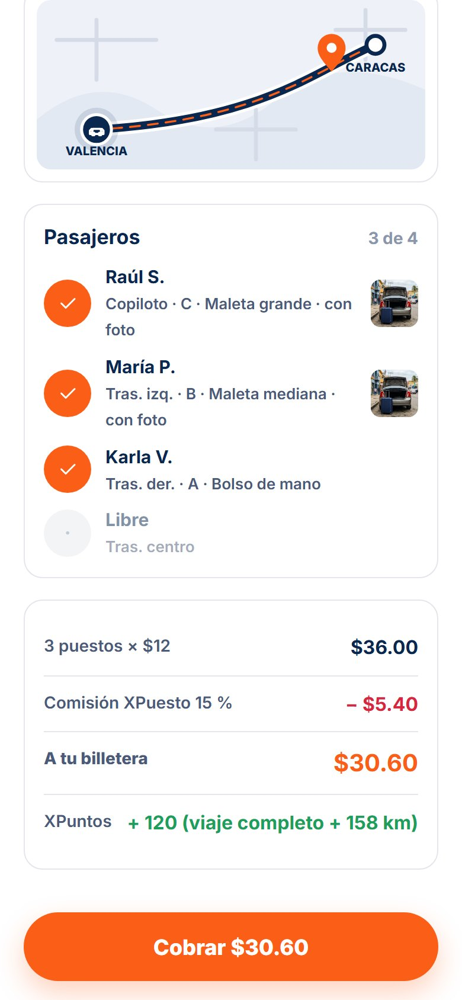
Estimado por chofer en Caracas–Valencia: 2 vueltas al día × 4 puestos × $12 = $96 brutos. Le quedan $81,60 al día tras la comisión. Supuesto a validar en el piloto.
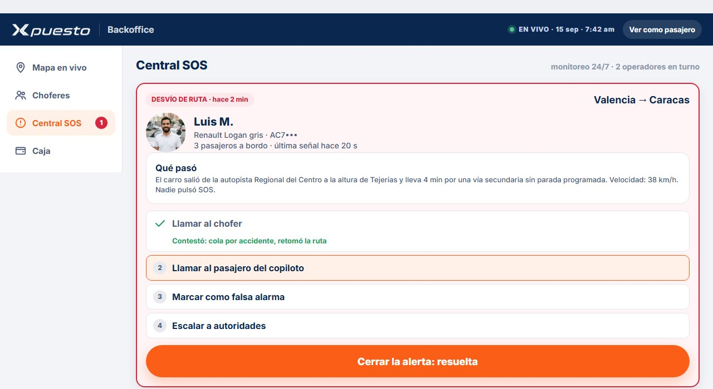
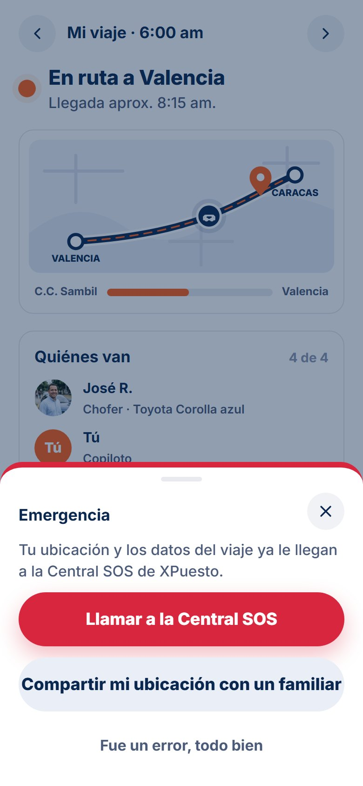
| Fuente | Cómo | Cuándo |
|---|---|---|
| Comisión por puesto | 10 % a 20 % de cada puesto vendido. Base: 15 %. | Desde el día 1 |
| Billetera prepago | El chofer que cobra efectivo carga saldo; la comisión se debita sola. | Desde el día 1 |
| Membresía del chofer | Validación, kit de seguridad, etiquetas, RCV aliado. ~$15 al mes. | Piloto |
| Premium y VIP | Puerta a puerta, carro exclusivo, ejecutivo, familias. Precio mayor, comisión mayor. | Piloto |
| Publicidad y alianzas | Comercios que son parada virtual pagan por el tráfico y los banners. | Etapa 2 |
| Cargo · Corporate · Tourism · Fleet | Encomiendas, cuentas empresa, turismo y flotas propias sobre la misma red. | Etapa 3 |
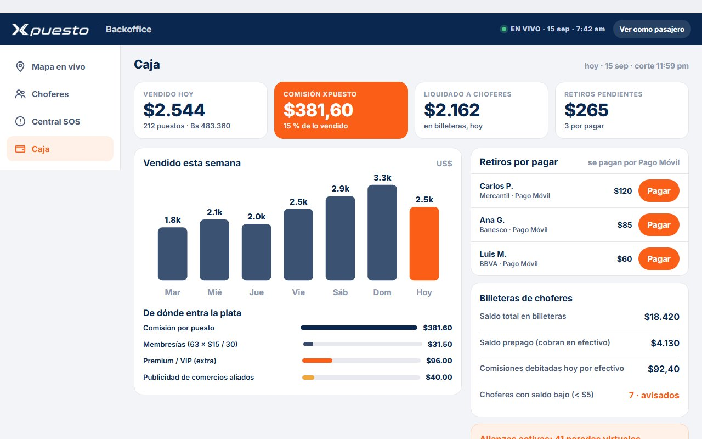
| Concepto | Valor |
|---|---|
| Precio por puesto | $12 |
| Carro lleno (4 puestos) | $48 |
| Comisión XPuesto por viaje (15 %) | $7,20 |
| Vueltas por chofer al día | 2 |
| Comisión por chofer al día | $14,40 |
| Choferes activos en el piloto | 150 |
| Comisión al día | $2.160 |
| Comisión al mes (26 días) | $56.160 |
| Membresías (150 × $15) | $2.250 |
| Ingreso mensual del piloto | ≈ $58.400 |
Supuestos: ocupación completa, 2 vueltas, 26 días. Con 60 % de ocupación real el ingreso baja a ≈ $35.000 al mes. Ambos escenarios cubren la operación del piloto.
150 choferes certificados, 20 paradas virtuales, app en producción con pagos reales. Validar ocupación, precio y comisión.
Maracay, Barquisimeto, Puerto La Cruz. Rutas de alta demanda y alianzas con cadenas de comercios.
Red de paradas virtuales y choferes certificados en los principales estados. Cargo, Corporate y Tourism sobre la misma red.
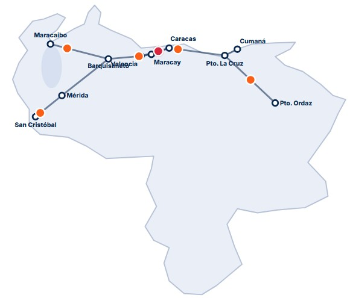
Rutas activas en el backoffice del prototipo
Las tres apps que están viendo: pasajero, conductor y backoffice. Diseñadas para el teléfono, instalables, con todas las mecánicas del negocio.
El equipo ya opera en producción, en otro producto propio con miles de usuarios venezolanos: KYC con cédula, billetera, Pago Móvil con conciliación automática, referidos, chat, notificaciones y paneles de administración. XPuesto los hereda.
Cuentas, reservas, cruce de horarios, GPS, pagos y central SOS reales sobre esa base. Estimado: 10 a 12 semanas desde el cierre hasta el primer viaje pago en Caracas – Valencia.
Categoría nueva: no competimos con Uber ni Ridery. Digitalizamos un mercado que hoy no tiene dueño y que mueve a millones de venezolanos entre ciudades.
[Trayectoria en transporte / comercio / operaciones]
[Terminales, comercios, choferes]
Construyó y opera en producción plataformas con pagos reales para el mercado venezolano. Autor del prototipo de XPuesto.
Contacto: [teléfono] · [correo] · xpuesto.app